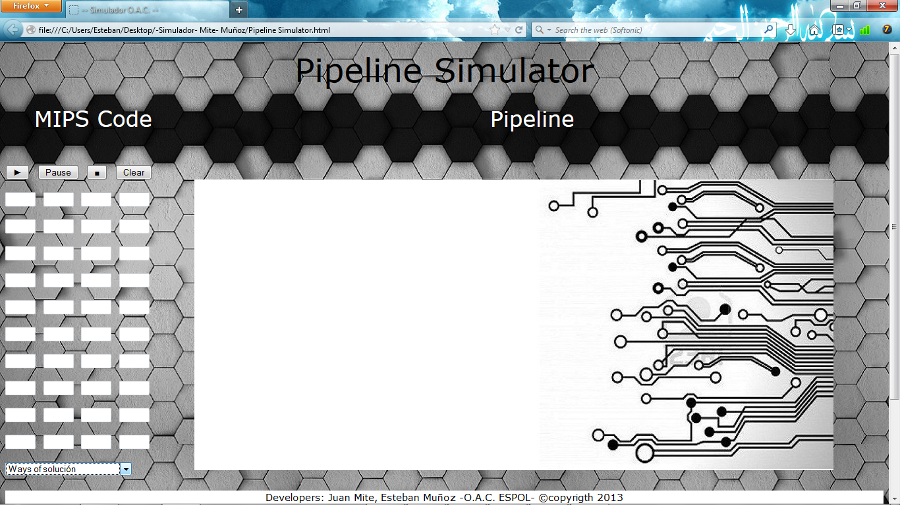
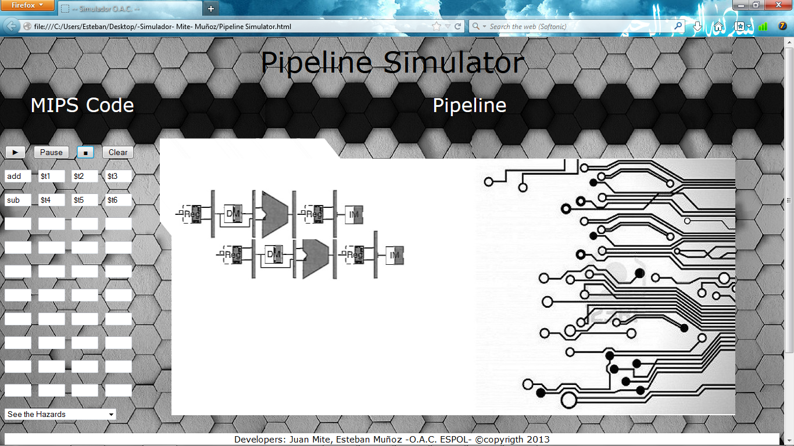
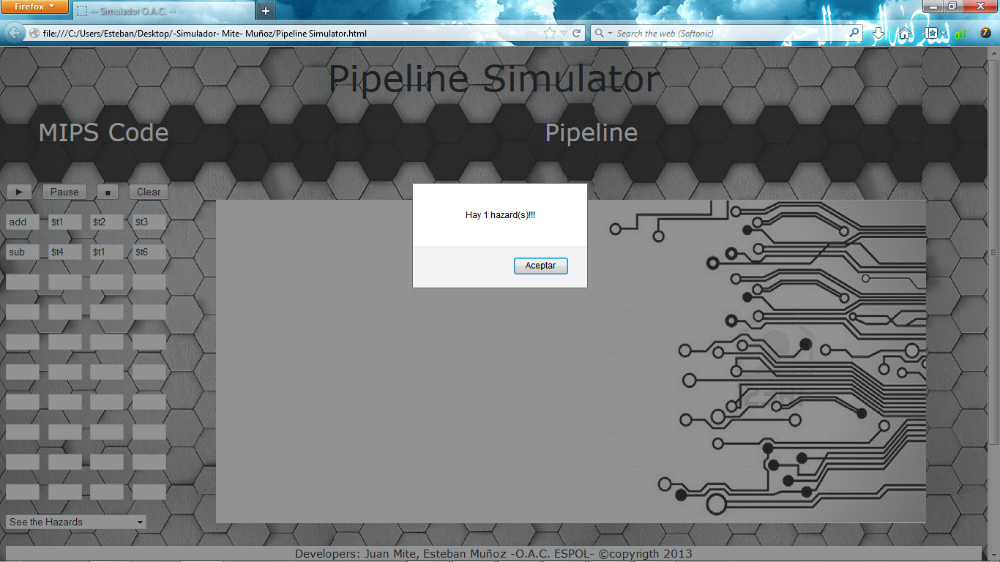
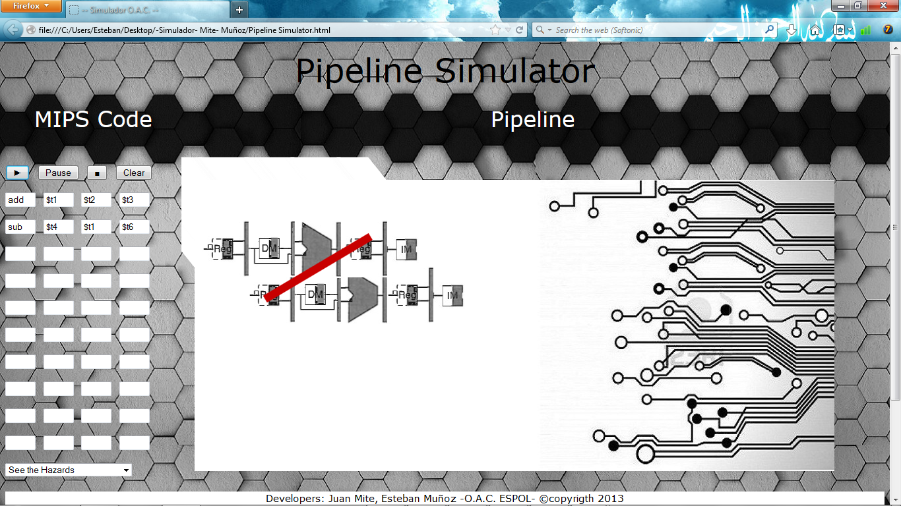
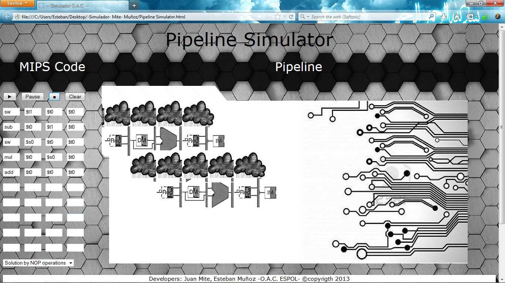

How to use it!
When you start the simulator web application looks like this on the left shows an arrangement of four options where the first instruction is placed and in the three following records for example: add $ t1, $ t2, $ t3.
We can also see the first button to run the application the second, take a pause, the following image freezes and the last clean box for another type of simulation that we need as seen in the bottom left there two ways to solve the problem based on the Combo Box shown solution or NOPs hazards, and on the right is the area where the simulation will be painted according to the code entered by the user.
An example when there is any kind of hazard shown us e the user indicating no hazard risks and draw the pipeline for each line of code entered by the user.
The graphics pipeline of the two lines of code entered by the user.
Now look at the same example but with hazard resolved by the two forms of risk resolution Hazards and Not operation (NOPs). We see clearly that there is dependence between the records and the application detects it correctly.
It can be observed solved the hazard which is drawn with a red colored line.
It can be seen as data dependency resolved but this time with not operation (Nops) which is drawn with black color clouds.
